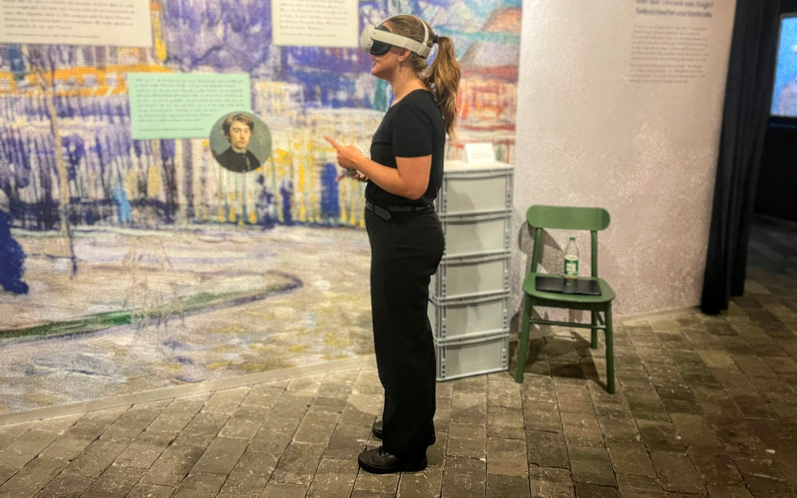

Van Gogh VR Experience
Visiodrom Wuppertal
Projekt für die Hochschule

Die Van Gogh VR Experience im Visiodrom Wuppertal verbindet Kunst und Technologie zu einem immersiven Erlebnis. Besucher tauchen mithilfe von Virtual Reality in den Kopf von Vincent van Gogh ein und ihn auf eine völlig neue, interaktive Weise. Das Projekt umfasste die Konzeption des Nutzerflusses, die Gestaltung der Interface-Elemente, die Abstimmung mit den technischen Anforderungen der VR-Plattform sowie das Nutzen von KI als interaktiven Chatbot.